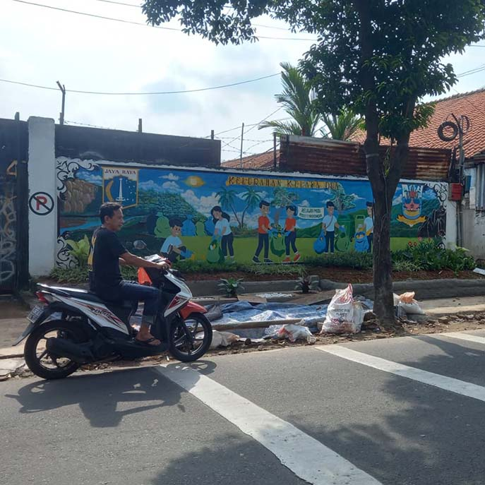
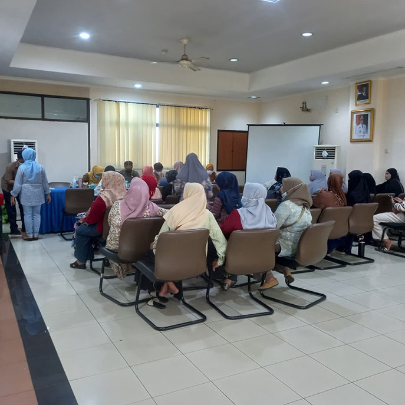

MediaKada | Kelurahan Kelapa Dua terus berupaya menghadirkan lingkungan yang bersih, indah, sekaligus bernilai seni. Upaya tersebut diwujudkan melalui program penataan wilayah di sepanjang Jalan Raya Kelapa Dua dengan menghadirkan mural pada tembok serta pembangunan taman di sejumlah titik strategis, Kamis (12/02/2026).
Pembuatan mural tidak hanya berfungsi sebagai penghias ruang publik, tetapi juga menjadi media ekspresi seni, komunikasi visual, sekaligus sarana menyampaikan pesan sosial kepada masyarakat. Melalui lukisan dinding yang penuh warna, warga diajak untuk lebih peduli terhadap kebersihan lingkungan, menjaga keindahan kawasan, serta menumbuhkan rasa memiliki terhadap ruang publik.
Selain itu, mural juga menjadi wadah kritik sosial dan penyampai nilai-nilai budaya yang relevan dengan kehidupan masyarakat. Dengan demikian, keberadaan mural di Kelapa Dua bukan sekadar mempercantik wilayah, tetapi juga memperkuat identitas kawasan dan membangun interaksi positif antarwarga.
Kegiatan penataan ini dilaksanakan oleh Kelurahan Kelapa Dua dengan melibatkan anggota PPSU yang bekerja langsung di lapangan. Lokasi mural dipilih secara strategis agar pesan yang terkandung di dalamnya dapat terlihat jelas oleh warga maupun pengendara yang melintas di Jalan Raya Kelapa Dua.
Apresiasi terhadap program ini datang dari berbagai pihak, anggota Lembaga Musyawarah Kelurahan (LMK) Kelapa Dua, Nasrulah menyampaikan :
dukungannya menurutnya, mural yang dibuat tidak hanya memperindah wilayah, tetapi juga mengandung pesan sosial yang penting bagi masyarakat. Ia berharap kegiatan semacam ini dapat terus berlanjut dan semakin melibatkan pengurus wilayah serta warga setempat.
Dengan adanya mural, Kelurahan Kelapa Dua menegaskan komitmennya untuk menghadirkan lingkungan yang bersih, indah, dan penuh makna. Penataan wilayah ini diharapkan menjadi langkah berkelanjutan dalam membangun kawasan yang nyaman sekaligus menjadi ruang ekspresi budaya masyarakat.
(LMK-08 Kelapa dua)

Sosialisasi Teknologi Wolbachia Pengendalian DBD di RW 08 Kelapa Dua